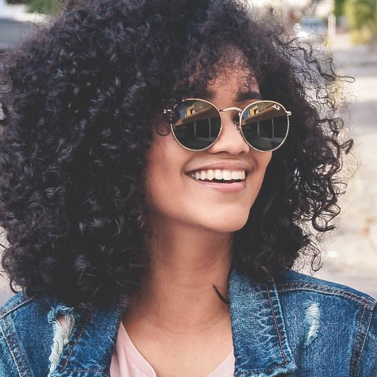
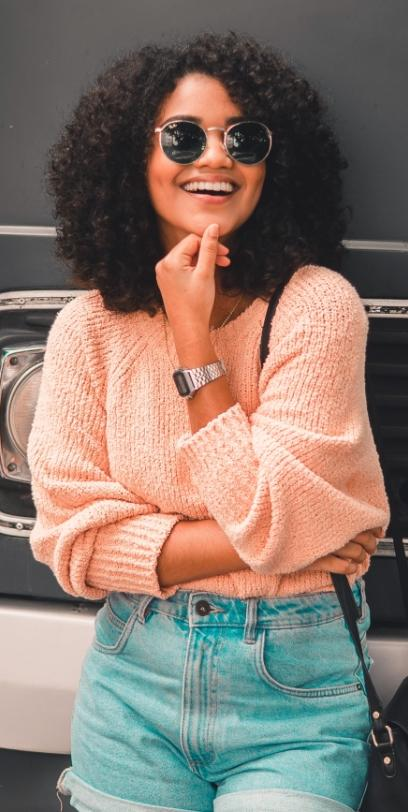

Game Programmer

Experienced in C++ and real-time graphics programming. Familiar with modern C++ features, type safety (static_cast), and implementing rendering techniques using OpenGL and WebGL.
Developing custom 2D/3D game engines. Comfortable with structuring game loops, managing memory, and building systems from scratch using SDL2 and C++.
Building and testing applications across Windows and Linux (WSL) environments. Focused on writing reliable code without platform-specific issues like variable shadowing.
Student and C++ Game Programmer
THello! I am Sungwoo Yang, a Computer Science student at DigiPen Institute of Technology, based in Daegu, South Korea. I am interested in systems programming, computer graphics, and learning how game engines work under the hood.
Currently, I am working as the Tech Lead for a team project named ASTAR, where we are developing our own C++ game engine. I enjoy the process of solving technical problems and implementing features like procedural generation, lighting, and custom shaders.
My team and I are actively working on our game to showcase it at upcoming developer events, including the Seoul Indies meetup and the BIC Festival.

A selection of my range of projects


Tech Lead, Team ASTAR
Sept 2025 - Present
Daegu, South Korea
Leading the technical direction and engine architecture for a custom C++ game project. Responsible
for managing the development scope and ensuring code quality across the team.
Custom Game Engine (ASTAR)
Sept 2025 - Present
Graphics Programmer / Tech Lead
Developed a high-performance 2D engine using C++, OpenGL, and SDL2. Transitioned the project
from Raylib to a custom abstraction to gain finer control over rendering and memory. Implemented
features including SVG-based map parsing and a custom light reflection system.
CS250 Graphics Portfolio
Feb 2026 - Present
Individual Developer
Built a series of WebGL-compatible graphics demos showcasing **Procedural Geometry, Exponential Fog,
Toon Shading, and Shadow Mapping**. Focused on robust cross-platform compatibility verified through
Windows and WSL environments.
B.S. in Computer Science in Real-Time Interactive Simulation
Expected May 2026
DigiPen Institute of Technology | Redmond, WA & Daegu, Korea
Relevant Courses: Computer Graphics, Advanced C/C++, Linear Algebra, Game Implementation Techniques.